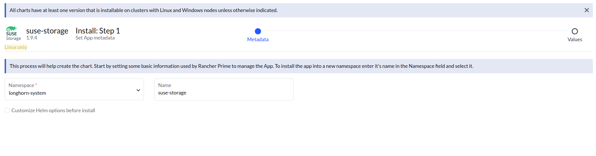
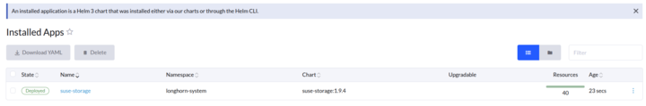
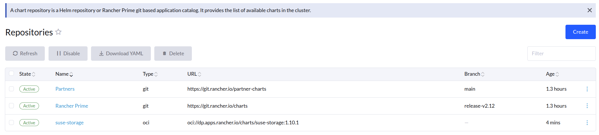
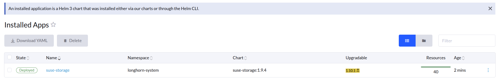
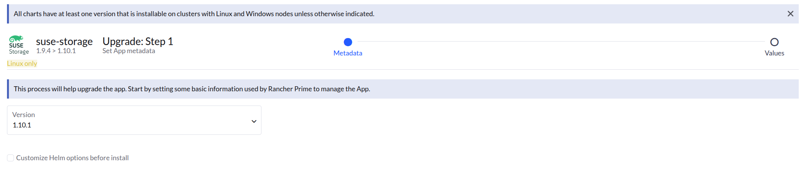

|
Este documento ha sido traducido utilizando tecnología de traducción automática. Si bien nos esforzamos por proporcionar traducciones precisas, no ofrecemos garantías sobre la integridad, precisión o confiabilidad del contenido traducido. En caso de discrepancia, la versión original en inglés prevalecerá y constituirá el texto autorizado. |
|
Esta es documentación inédita para SUSE® Storage 1.12 (Dev). |
Actualizar Longhorn Manager
|
Se recomienda crear una copia de seguridad del sistema Longhorn antes de realizar la actualización. Esto asegura que todos los recursos críticos, como volúmenes e imágenes de backing, estén respaldados y puedan ser restaurados en caso de que surjan problemas. |
Actualizando desde v1.10.x
SUSE Storage solo admite la actualización a v1.12 desde v1.10.x. Para otras versiones, por favor actualiza primero a v1.10.x.
Para actualizaciones en entorno aislado cuando SUSE Storage está instalado como una aplicación de Rancher, necesitarás modificar los nombres de las imágenes y eliminar la parte de la URL del registro.
Para actualizaciones en entorno aislado cuando SUSE Storage está instalado como una aplicación de Rancher, necesitarás modificar los nombres de las imágenes y eliminar la parte de la URL del registro. Por ejemplo, la imagen registry.example.com/longhorn/longhorn-manager:v1.12.0 se cambia a longhorn/longhorn-manager:v1.12.0 en la sección de imágenes de Longhorn. Para más información, consulta los pasos de instalación en entorno aislado aquí.
Actualización
|
Siempre realiza copias de seguridad de los volúmenes antes de actualizar. Si algo sale mal, puedes restaurar el volumen utilizando la copia de seguridad. |
Actualizar utilizando la interfaz de SUSE Rancher Prime
Para clústeres de Kubernetes gestionados por SUSE Rancher Prime, puedes actualizar la aplicación SUSE Storage actualizando el repositorio para hacer referencia a una versión más nueva del gráfico de Helm.
El siguiente procedimiento describe cómo actualizar la aplicación SUSE Storage en SUSE Rancher Prime.
-
Ve a Aplicaciones > Repositorios.
-
Haga clic en Crear.
-
Selecciona Repositorio OCI como el objetivo.
-
Proporciona un nombre para el repositorio, por ejemplo,
suse-storage. -
En el campo URL del host del repositorio OCI, introduce:
oci://dp.apps.rancher.io/charts/suse-storage
-
Haz clic en el botón Crear.
-
Verifica que el repositorio se haya añadido correctamente.

-
Ve a Apps > Charts y encuentra el gráfico
suse-storage.
-
Haz clic en el gráfico y luego haz clic en Instalar.

-
En la siguiente página, establece
global.imagePullSecretsenapplication-collection, y luego haz clic en Instalar.Consulta la documentación de autenticación para la configuración de credenciales.
global: cattle: windowsCluster: defaultSetting: systemManagedComponentsNodeSelector: kubernetes.io/os:linux taintToleration: cattle.io/os=linux:NoSchedule enabled: false nodeSelector: kubernetes.io/os: linux tolerations: - effect: NoSchedule key: cattle.io/os operator: Equal value: linux imagePullSecrets: [application-collection] imageRegistry: '' -
Esto actualiza
suse-storage1.12
-
Después de la actualización, ve a Apps > Repositories.
Para versiones de SUSE Rancher Prime anteriores a v2.13, sigue estos pasos:-
Selecciona el repositorio
suse-storage, haz clic en el menú de tres puntos y elige Editar configuración. -
Solución: Actualiza la URL a
oci://dp.apps.rancher.io/charts/suse-storage:1.12.0para asegurar que se detecte la versión. -
El repositorio debería actualizarse correctamente.

-
Ve a Apps > Aplicaciones instaladas.
-
En el espacio de nombres
longhorn-system, bajo la columna Actualizable, busca una etiqueta1.12.0resaltada en amarillo.
-
Haz clic en la etiqueta amarilla
1.12.0para abrir la página de actualización.
-
Haga clic en Siguiente.
-
Asegúrate de que
global.imagePullSecretsesté configurado enapplication-collection, y luego haz clic en Actualizar.
-
-
Ve a Apps > Gráficos y selecciona el gráfico
suse-storage. -
Selecciona la versión de actualización deseada del panel Versiones de Gráfico.

-
Haz clic en Actualizar a esta versión.
-
Después de que la actualización se complete, verifica que la versión del gráfico
suse-storagese haya actualizado a1.12.0.
Actualizar con Helm
Actualizar el gráfico Helm SUSE Storage implica actualizar tu ampliación a una versión más nueva o cambiar entre imágenes de la comunidad Longhorn y las imágenes SUSE Storage.
El comando general de Helm para actualizar es:
helm upgrade longhorn oci://dp.apps.rancher.io/charts/suse-storage \
--namespace longhorn-system \
--version <version> \ # Replace with the version you would like to upgrade to
--set global.imagePullSecrets=<PULL_IMAGE_SECRET> \
-f values.yaml|
Para crear un secreto, sigue la documentación de AppCo. |
O, si actualizas sin un archivo values.yaml específico y solo cambias la versión:
helm upgrade longhorn oci://dp.apps.rancher.io/charts/suse-storage \
--namespace longhorn-system \
--version <version> \ # Replace with the version you would like to upgrade to
--set global.imagePullSecrets=<PULL_IMAGE_SECRET>-
Ruta de actualización: Consulta la SUSE Storage documentación de actualización oficial para rutas de actualización específicas de versión a versión, requisitos previos y pasos de verificación post-actualización. Esto es importante para asegurar una actualización fluida y la integridad de los datos.
-
Cambios de configuración: Si tienes configuraciones personalizadas, asegúrate de trasladarlas a la nueva versión del gráfico, fusionándolas con cualquier cambio por defecto.
Actualiza con Fleet
Actualiza el valor de helm.version en el archivo YAML fleet de tu repositorio de GitOps.
helm:
repo: https://charts.longhorn.io
chart: longhorn
version: v1.12.0 # Replace with the SUSE Storage version you would like to upgrade to
releaseName: longhornActualiza con Flux
Actualiza el valor de spec.chart.spec.version en el archivo YAML HelmRelease de tu repositorio de GitOps.
spec:
chart:
spec:
chart: longhorn
reconcileStrategy: ChartVersion
sourceRef:
kind: HelmRepository
name: longhorn
version: v1.12.0 # Replace with the SUSE Storage version you would like to upgrade toActualiza con Argo CD
Actualiza el valor de targetRevision en el archivo YAML Application de tu repositorio de GitOps.
spec:
project: default
sources:
- chart: longhorn
repoURL: https://charts.longhorn.io
targetRevision: v1.12.0 # Replace with the SUSE Storage version you would like to upgrade toLuego, espera a que todos los pods estén en ejecución y la interfaz de SUSE Storage funcione. Por ejemplo:
$ kubectl -n longhorn-system get pod
NAME READY STATUS RESTARTS AGE
engine-image-ei-4dbdb778-nw88l 1/1 Running 0 4m29s
longhorn-ui-b7c844b49-jn5g6 1/1 Running 0 75s
longhorn-manager-z2p8h 1/1 Running 0 71s
instance-manager-b34d5db1fe1e2d52bcfb308be3166cfc 1/1 Running 0 65s
longhorn-driver-deployer-6bd59c9f76-jp6pg 1/1 Running 0 75s
engine-image-ei-df38d2e5-zccq5 1/1 Running 0 65s
csi-snapshotter-588457fcdf-h2lgc 1/1 Running 0 30s
csi-resizer-6d8cf5f99f-8v4sp 1/1 Running 1 (30s ago) 37s
csi-snapshotter-588457fcdf-6pgf4 1/1 Running 0 30s
csi-provisioner-869bdc4b79-7ddwd 1/1 Running 1 (30s ago) 44s
csi-snapshotter-588457fcdf-p4kkn 1/1 Running 0 30s
csi-attacher-7bf4b7f996-mfbdn 1/1 Running 1 (30s ago) 50s
csi-provisioner-869bdc4b79-4dc7n 1/1 Running 1 (30s ago) 43s
csi-resizer-6d8cf5f99f-vnspd 1/1 Running 1 (30s ago) 37s
csi-attacher-7bf4b7f996-hrs7w 1/1 Running 1 (30s ago) 50s
csi-attacher-7bf4b7f996-rt2s9 1/1 Running 1 (30s ago) 50s
csi-resizer-6d8cf5f99f-7vv89 1/1 Running 1 (30s ago) 37s
csi-provisioner-869bdc4b79-sn6zr 1/1 Running 1 (30s ago) 43s
longhorn-csi-plugin-b2zzj 2/2 Running 0 24sA continuación, actualiza Longhorn Engine.